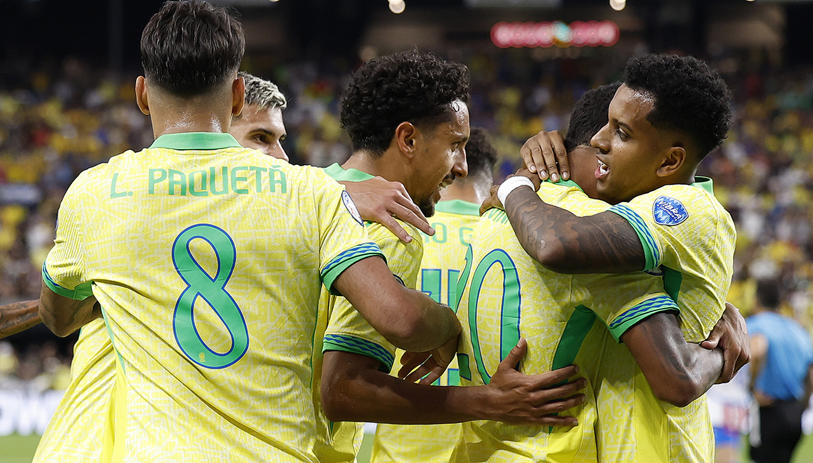
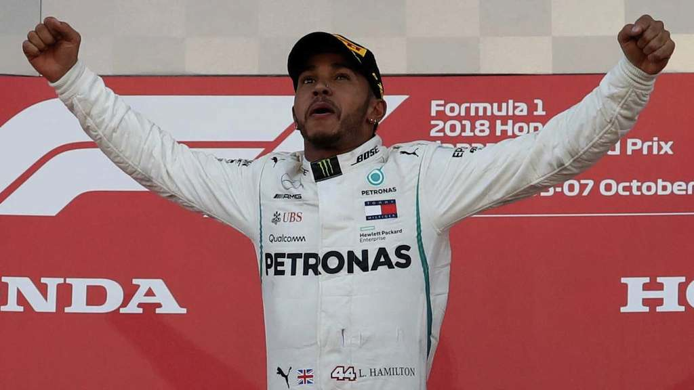
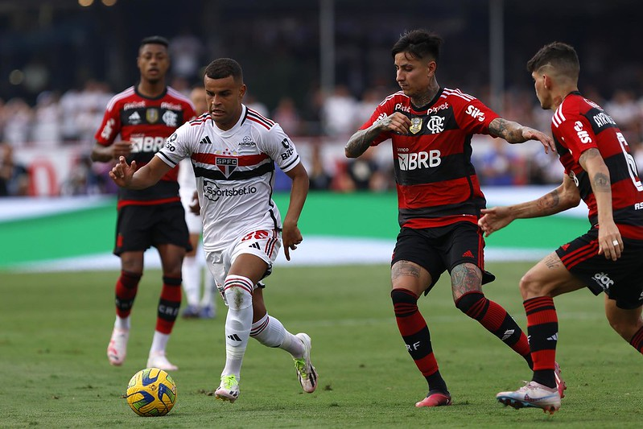
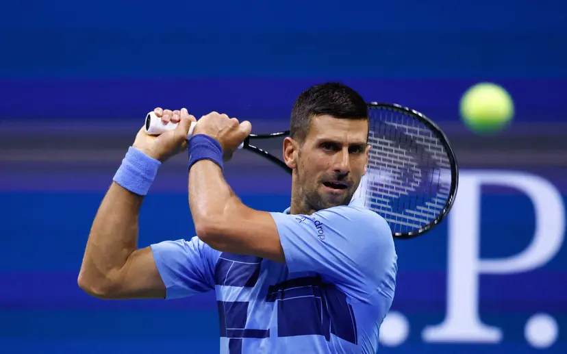
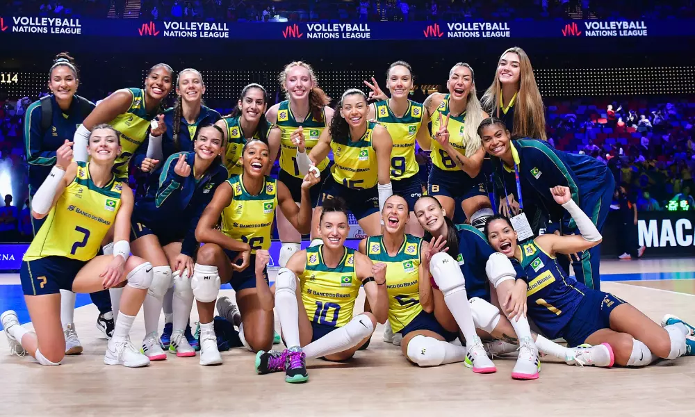

Brasil vence Colômbia e mantém liderança nas Eliminatórias da Copa
Publicado em: 18 de Outubro de 2024

Em mais uma rodada das Eliminatórias da Copa do Mundo de 2026, o Brasil venceu a Colômbia por 2 a 1 em um jogo emocionante na noite desta quarta-feira. Os gols brasileiros foram marcados por Neymar e Richarlison, garantindo a liderança da equipe comandada por Fernando Diniz.
O time colombiano até conseguiu empatar no início do segundo tempo, com um gol de Luis Díaz, mas a seleção brasileira mostrou resiliência e voltou à frente com um gol de cabeça de Richarlison aos 78 minutos. A vitória mantém o Brasil invicto e firme na liderança do grupo sul-americano.
Lewis Hamilton vence GP do Japão e encurta vantagem de Verstappen no Mundial de F1
Publicado em: 18 de Outubro de 2024

O heptacampeão mundial Lewis Hamilton venceu o Grande Prêmio do Japão, uma vitória crucial para manter suas esperanças de título no campeonato de 2024. Com essa vitória, Hamilton reduziu a vantagem de Max Verstappen, que continua liderando, mas agora com uma diferença menor.
"Foi uma corrida incrível", disse Hamilton após a vitória. "A equipe fez um trabalho fantástico, e estamos focados em continuar pressionando nas últimas corridas do ano."
Flamengo derrota São Paulo e se classifica para a final da Copa do Brasil
Publicado em: 18 de Outubro de 2024

Em uma partida decisiva, o Flamengo garantiu sua vaga na final da Copa do Brasil ao vencer o São Paulo por 2 a 0 no Maracanã. Com gols de Pedro e Bruno Henrique, o time carioca se classificou para mais uma final, em busca de mais um título na temporada.
A final será disputada contra o Grêmio, que também garantiu sua classificação em uma vitória dramática contra o Corinthians. O Flamengo busca seu quinto título da competição, consolidando-se como um dos maiores vencedores da história do torneio.
Novak Djokovic conquista seu 25º título de Grand Slam no US Open
Publicado em: 18 de Outubro de 2024

Novak Djokovic fez história ao conquistar seu 25º título de Grand Slam ao vencer Daniil Medvedev na final do US Open de 2024. Com essa vitória, Djokovic se consolida ainda mais como o maior vencedor de torneios de Grand Slam na história do tênis.
O sérvio, de 37 anos, mostrou mais uma vez sua capacidade de dominar o circuito, vencendo por 3 sets a 1. "Este é um momento especial na minha carreira. Continuarei lutando enquanto tiver paixão pelo esporte", declarou Djokovic após o jogo.
Seleção Brasileira de Vôlei Feminino se classifica para as Olimpíadas de Paris 2024
Publicado em: 18 de Outubro de 2024

A Seleção Brasileira de Vôlei Feminino garantiu sua vaga nas Olimpíadas de Paris 2024 ao vencer a equipe da Sérvia em um jogo emocionante. Com a vitória por 3 sets a 2, o Brasil se classificou de forma direta e busca seu terceiro ouro olímpico na modalidade.
O técnico José Roberto Guimarães elogiou a performance da equipe: "Estamos no caminho certo e vamos com tudo para Paris em busca do ouro." A seleção brasileira é uma das favoritas para conquistar o título olímpico.